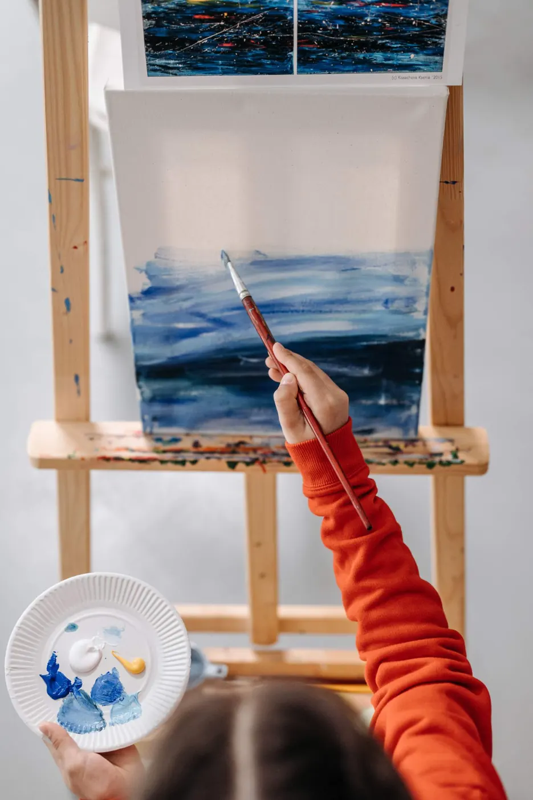
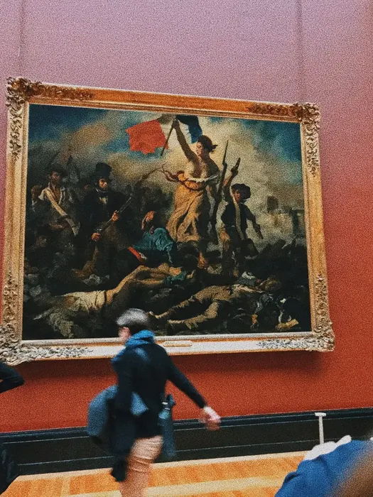
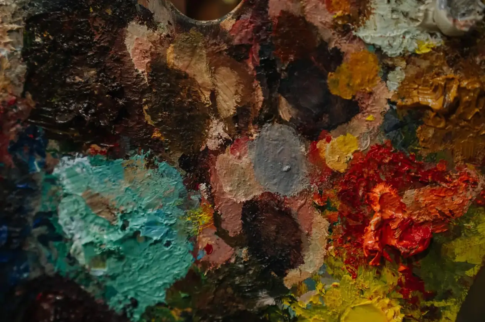
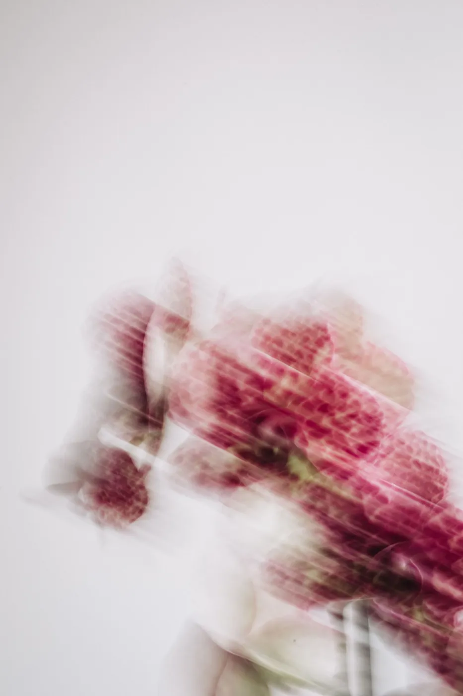
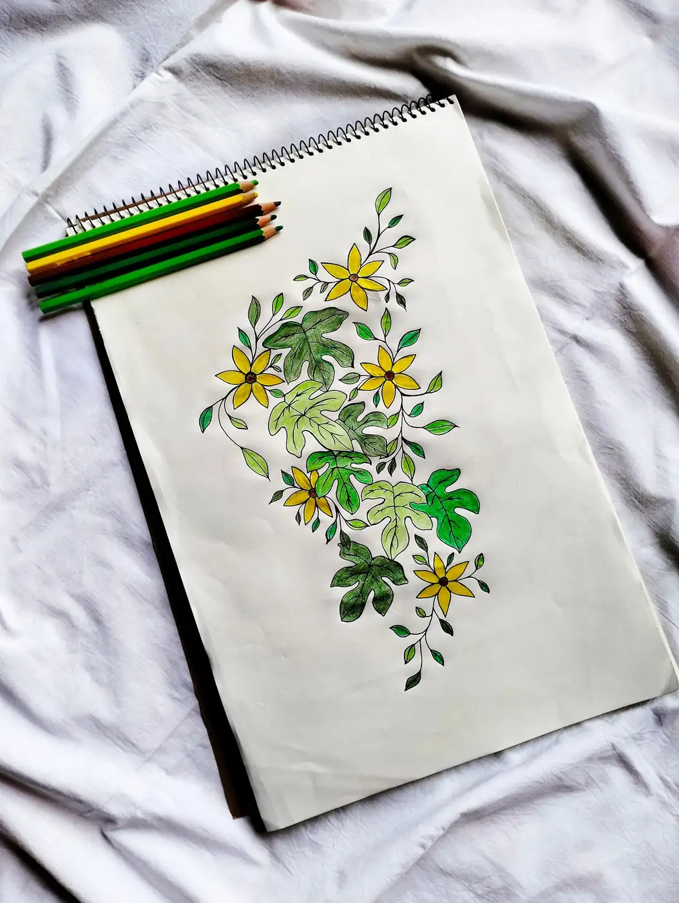
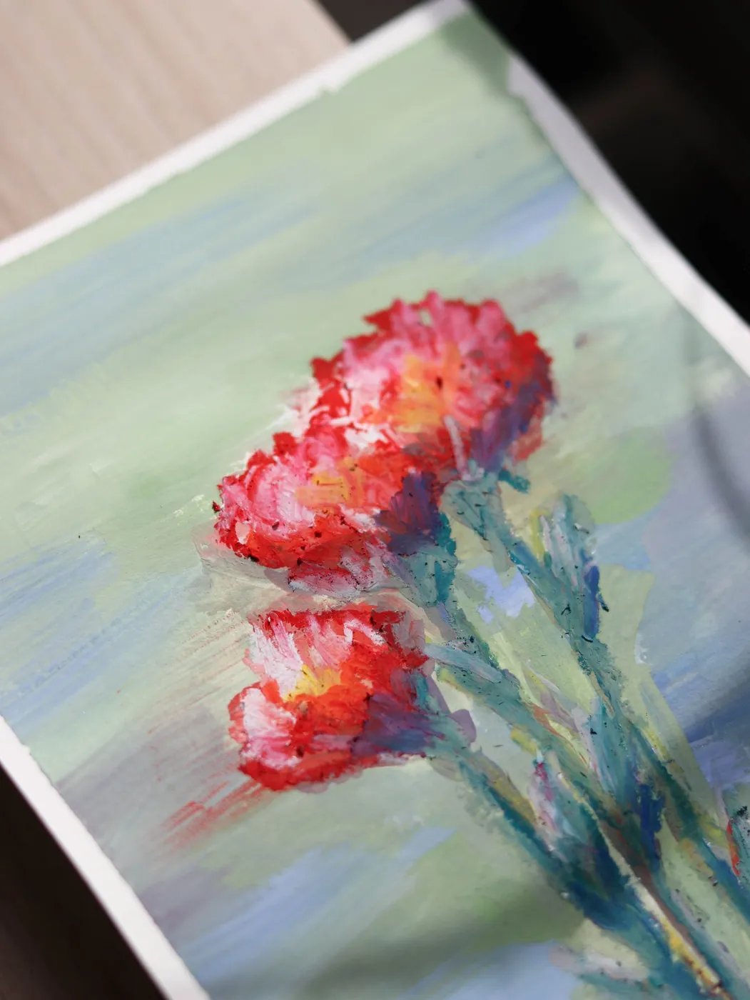

0%
Process, colour theory and honest studio diaries — written by the people who hold the brushes.

A look inside the studio’s planning board — from the first palette swatch to the final coat of varnish — and why we never start with a subject.
Read the entry
A 9-metre wall begins life as a postage-stamp drawing. Here’s how we scale one into the other.
Read the entry
Nine times out of ten a flat painting is a palette problem. A walkthrough of the fix.
Read the entry
Mixing inks, registering the screens, and the 40 pulls it takes to make an edition.
Read the entry
Size, light, budget and the one question to ask before you fall in love with a piece.
Read the entry
Why a generative drawing still needs a human eye, and where the hand comes back in.
Read the entry
Night scenes get muddy fast. Three ways we keep the dark luminous.
Read the entry
Five minutes of pencil studies before every portrait commission, and why we never skip them.
Read the entry
White is never just white. How cool greys and warm peach build a bloom.
Read the entry
Every studio has one: the canvases that missed the show but taught us the most.
Read the entry
A slow, shaky photo can show you a palette faster than a sharp one.
Read the entry
Why botanical commissions start with a pencil sheet and a handful of greens.
Read the entry
Red against pale green, and how to keep it from turning chalky.
Read the entrySmall studies from the sketchbook, shared for anyone who loves colour as much as we do.


 Behind the scenes
Behind the scenesWe photograph the false starts, the scraped-off layers and the colour tests that never made it. The Journal is where they live — because the story of a painting is rarely the story of its finished surface.
Meet the studioTell me about the wall, the mood, the story. You’ll get a sketch direction and a clear quote within 3 working days.